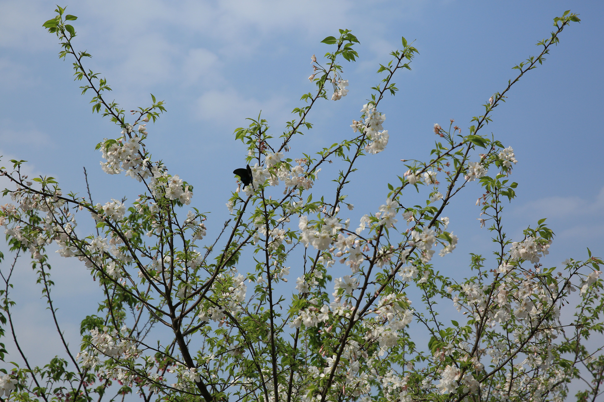

爱好

旅游
1、春暖花开，为你而来。
2、有趣的人生一半是山川湖海。
3、眼里是阳光，笑里是坦荡。
4、从别处来，不知去何处。

音乐
1、让人深在浮世中，却有月当空，清风徐徐之感
2、歌声余音绕梁，三日不绝，细细听来，一种深沉却飘然出世的感觉会理科占据认得心 头，仿佛一切尘器都已远去，只有这天簌之音，
3、清风吹歌入空去，歌曲自绕行云飞。
4、拥有阳光般温暖美好的歌曲。
爱好
亭台楼阁,池馆水榭，映在青松翠柏之中:假山怪石，花坛盆景，藤萝翼竹，点缀 其间。

爱好
1、枕上片时春梦中，行尽江南数千里。
2、掬一捧蓝天，蓝得纯粹，蓝得深邃。
3、我和你携手并肩，踩着粉色的花瓣一路向前。
4、好雨知时节，当春乃发生。随风潜入夜，润物细无声。
爱好
1、旅行是治坏心情的良药音乐也是。
2、路再长，都长不过我35码半的脚步。
3、忙里偷闲的生活碎片。
4、今天只负责开心。
个人经历
1. I love football very much. I am the main player and part-time coach of the college football team. This semester, I led the team to the knockout round.
2. This semester, I started my internship in Migu, where I was exposed to such sports events as Universiade and Asian Games, which will lay a good foundation for my future employment.
Copyright © 2023 个人主页 版权所有